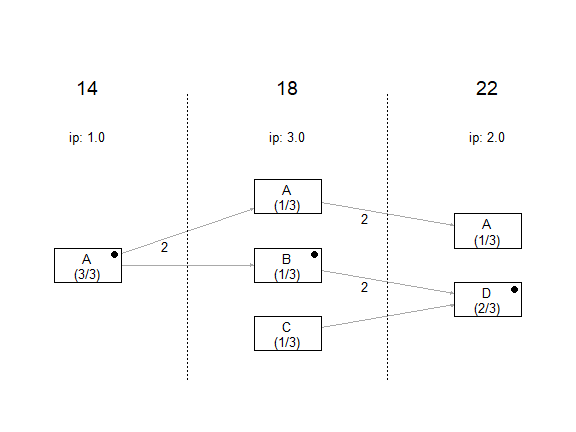
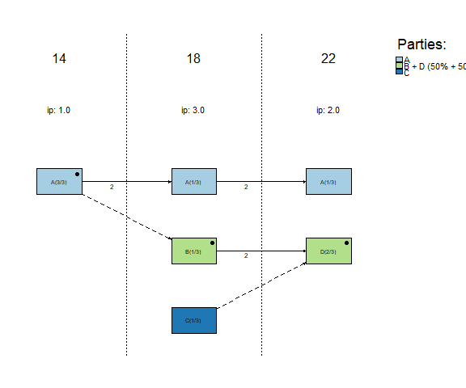
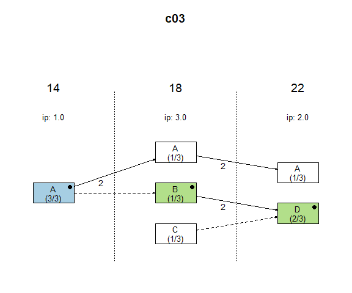
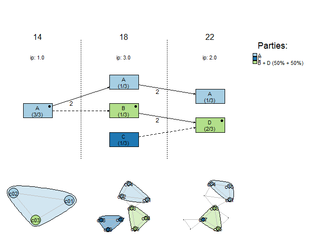

Overview
The R package lpanda provides tools for preparing, analyzing and visualizing diachronic network data from municipal election results. It is designed to make it easier to study local political actor networks, with a particular focus on the development of local party systems’ format, especially in small municipalities.
The core functionality centres on continuity diagrams that trace candidacies of local political actors across multiple elections. In addition, lpanda can visualise the evolving candidate-candidate network over time, helping to explore how electoral groupings emerge, stabilise, fragment or realign across successive elections.
Installation
You can install the released version of lpanda from CRAN with:
install.packages("lpanda")Or install the development version from GitHub with:
devtools::install_github("localpolitics/lpanda")Usage
To create a basic continuity diagram of candidacies of local political actors, it is necessary to prepare election data containing at least unique names of candidates, unique names of the candidate lists they ran on, and the years of the elections. If the same names occur more than once, they need to be distinguished, e.g., by adding numbers after the names of candidates (for example, “Jane Doe (2)” or “Smith John, Jr.”) or candidate lists (for example, “Independents 3”). Then just use the plot_continuity() function.
library(lpanda)
#> lpanda (0.1.1.9008) successfully loaded. Type ?lpanda for help.
## basic example code
data(sample_data, package = "lpanda")
df <- sample_data
plot_continuity(df)
However, the usefulness of the package lies in the simplicity of converting basic data into network data, which can be used not only with the lpanda package, but also with other packages for social network analysis.
The following example shows how raw data is converted to network data. The output is a list of networks that contain edgelist and node attributes that can be directly used for social network analysis. The last item contains statistics of the included elections.
netdata <- prepare_network_data(sample_data, verbose = FALSE)
str(netdata, max.level = 2)
#> List of 6
#> $ bipartite :List of 2
#> ..$ edgelist :'data.frame': 18 obs. of 5 variables:
#> ..$ node_attr:'data.frame': 16 obs. of 20 variables:
#> $ candidates:List of 2
#> ..$ edgelist :'data.frame': 15 obs. of 3 variables:
#> ..$ node_attr:'data.frame': 10 obs. of 10 variables:
#> $ lists :List of 2
#> ..$ edgelist :'data.frame': 7 obs. of 3 variables:
#> ..$ node_attr:'data.frame': 6 obs. of 11 variables:
#> $ continuity:List of 2
#> ..$ edgelist :'data.frame': 5 obs. of 3 variables:
#> ..$ node_attr:'data.frame': 6 obs. of 11 variables:
#> $ parties :List of 2
#> ..$ edgelist :'data.frame': 2 obs. of 3 variables:
#> ..$ node_attr:'data.frame': 3 obs. of 11 variables:
#> $ elections :List of 2
#> ..$ edgelist :'data.frame': 3 obs. of 3 variables:
#> ..$ node_attr:'data.frame': 3 obs. of 7 variables:
# election stats
print(netdata$elections$node_attr)
#> vertices is_isolate cands seats elected lists plurality
#> 1 14 FALSE 3 3 3 1 1
#> 2 18 FALSE 9 3 3 3 3
#> 3 22 FALSE 6 3 3 2 2For diachronic analysis of the continuity of candidacies of local political actors, a number of parameters in the plot_continuity() function can be used (see ?plot_continuity). These help identify political parties (clusters of candidate lists) and track the behaviour of individual actors across elections, for example when studying the stability of local party systems or the career paths of specific councillors.
# identified "political parties"
plot_continuity(
netdata,
mark = "parties",
separate_groups = TRUE,
do_not_print_to_console = TRUE
)
# tracking the candidacies of candidate "c03"
plot_continuity(
netdata,
mark = c("candidate", "c03"),
do_not_print_to_console = TRUE
)
Adding the show_candidate_networks argument extends the continuity diagram with an additional bottom panel showing candidate-candidate network snapshots for each included election. Nodes are coloured by long-term group affiliation (e.g. detected “parties”), while node borders indicate the candidate lists used in each election. This makes it possible to inspect how electoral groupings are composed, how cohesive they are internally, and how they may fragment, merge, or realign over time.
# candidate network snapshots coloured by groups and bordered by lists
plot_continuity(
netdata,
mark = "parties",
show_candidate_networks = TRUE,
do_not_print_to_console = TRUE
)
Included datasets
lpanda contains several sample datasets from Czech municipal elections. These include both small, fictitious samples (such as sample_data, used in the examples above) and real-world case studies of individual municipalities.
The case-study datasets combine official election results with field research and previously published analyses of Czech local politics. They can be used to reproduce published continuity diagrams, to experiment with the workflow, or as templates for preparing your own data.
You can see an overview of available datasets by running help("lpanda") and inspect individual objects via their help pages (e.g., ?sample_data, ?Doubice_DC_cz).